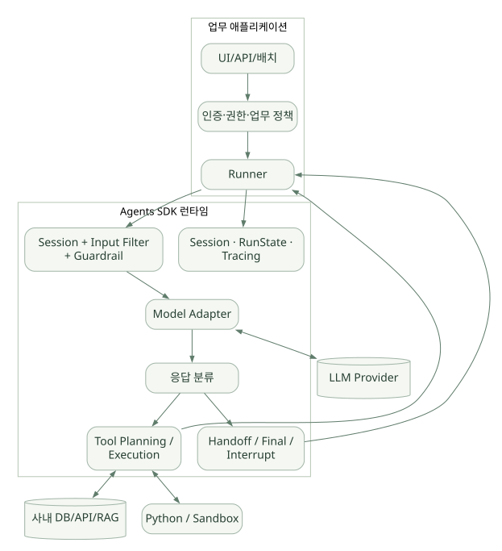
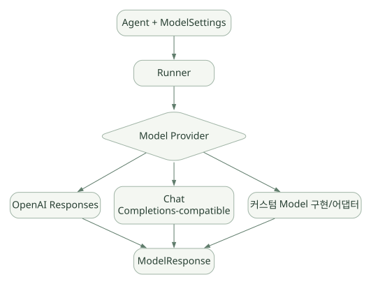

핵심 원리 / 단원 02
한 요청의 반복과 종료 이해하기
현재 Agent와 모델 응답이 다음 실행을 결정하는 과정
먼저 연결해 보기
Runner는 현재 Agent 설정으로 모델을 호출하고, 응답의 종류에 따라 다음 상태를 결정합니다. 도구 실행, Handoff, 승인 대기와 최종 출력은 단순한 완료 여부 하나로 표현하기 어렵습니다.
Turn 수 제한은 모델 호출의 반복을 제어하지만 외부 도구의 시간과 부작용을 모두 제한하지는 않습니다. Model Provider를 교체할 때도 Tool Calling과 Streaming, 출력 스키마의 실제 호환성을 따로 확인해야 합니다.
읽는 관점반복 예산과 도구 timeout, 전체 deadline을 분리하고 모델 공급자 경계를 확인하세요.
5. 전체 아키텍처#
넓은 도식은 가로로 이동하며 읽을 수 있습니다. 도식 크게 보기 ↗

원문에 수록된 학습용 도식입니다. 노드·화살표·분기 라벨을 보존해 다시 배치했습니다. 세부 조건과 예시·구현의 구분은 앞뒤 본문을 함께 읽으세요.
도식 원문 보기 (Mermaid)
flowchart LR
subgraph Application[업무 애플리케이션]
API[UI/API/배치] --> POL[인증·권한·업무 정책]
POL --> R[Runner]
end
subgraph SDK[Agents SDK 런타임]
R --> PRE[Session + Input Filter + Guardrail]
PRE --> MOD[Model Adapter]
MOD --> RES[응답 분류]
RES --> EXE[Tool Planning / Execution]
RES --> SWITCH[Handoff / Final / Interrupt]
EXE --> R
SWITCH --> R
R --> STATE[Session · RunState · Tracing]
end
MOD <--> LLM[(LLM Provider)]
EXE <--> DB[(사내 DB/API/RAG)]
EXE <--> PY[Python / Sandbox]Runner는 orchestration의 중심이다. Agent 구성에서 instructions, model, tools, handoffs, output_type 등을 얻고, Model 인터페이스로 요청을 보낸다. 수신된 모델 응답이 ModelResponse에서 SDK RunItem 및 도구 실행 기록으로 변환되고 결과에 따라 다음 단계가 결정된다. [S03], [S27]
5.1 주요 객체 목록#
| 객체 | 담당 기능 | 구분 |
|---|---|---|
Agent |
모델, instructions, tools, handoffs, 출력형과 Guardrail 등 선언 | 구성 |
Runner |
Agent 실행·반복·종료·중단 | 실행 진입점 |
RunConfig |
호출 수준 설정, 모델 제공자, tracing, 전역 검증 | 실행 설정 |
RunContextWrapper |
실행 중 의존성·사용량·승인 상태 등 로컬 컨텍스트 | 런타임 정보 |
FunctionTool |
모델이 호출 가능한 함수의 이름·스키마·실행 핸들러 | 외부 행동 |
Handoff |
다른 Agent로 제어권 이전 | 오케스트레이션 |
RunResult |
최종 답, 사용량, 새로운 항목, 마지막 Agent, 승인 대기 등 | 결과 |
RunState |
중단·승인·재개를 위한 직렬화 가능한 실행 상태 | 장기 실행 |
Session |
여러 호출에 걸친 대화 항목의 지속성 | 대화 기억 |
Trace / Span |
전체 워크플로 및 부분 실행 구간 기록 | 관측 |
6. Agent 자체를 정확히 이해하기#
6.1 선언형 구성 객체#
from pydantic import BaseModel
from agents import Agent, ModelSettings
class DiagnosisDraft(BaseModel):
observed_issue: str
possible_causes: list[str]
evidence_required: list[str]
agent = Agent(
name="FaultAnalysisAssistant",
instructions=(
"검증 가능한 증거와 가설을 구분하라. "
"증거 없이 확정 원인을 단정하지 마라."
),
model="<검증된 지원 모델명>", # 실제 실행 시 치환
model_settings=ModelSettings(temperature=0),
output_type=DiagnosisDraft,
)Agent는 dataclass 기반의 정의이며 name, instructions, handoff_description, tools, mcp_servers, handoffs, input_guardrails, output_guardrails, output_type, model 등 설정을 갖는다. 필드 구성의 최신 상세는 실제 버전 소스와 API Reference를 확인한다. [S02], [C01]
6.2 Instruction과 시스템 프롬프트#
instructions: 해당 Agent가 따라야 할 주요 행동 지침. 문자열 또는 실행 문맥에 따라 계산되는 함수 형태를 지원한다. [S02]handoff_description: 다른 Agent가 이 Agent에게 넘길 업무를 이해하기 위한 설명.prompt및 프롬프트 관리 관련 기능은 모델·SDK 버전에 따라 별도의 적용 범위가 있다. 기본 instructions, 개발자 정책, 외부 검색 데이터의 역할을 구분해야 한다.- 프롬프트는 보안 정책을 설명할 수 있지만, 강제 권한 관리 시스템을 대신하지 못한다.
6.3 clone()의 함정#
Agent.clone()은 얕은 복사이므로 미리 정의된 리스트 형태의 tools, handoffs, mcp_servers 등을 별도로 넘기지 않았다면 같은 리스트를 공유할 수 있다. 서로 다른 업무별 Agent를 생성하면서 한쪽의 도구를 수정하면 의도치 않게 다른 Agent에도 반영될 수 있다. [S02]
# 리스트 컨테이너 독립성을 명시적으로 확보하는 형태
read_only_variant = agent.clone(tools=[*agent.tools])6.4 Agent 구성과 실행 설정의 역할 분리#
- Agent: 이 작업자는 누구이고 무엇을 할 수 있는가?
RunConfig: 이번 실행에 어떤 모델 정책, tracing, 전체 실행 설정을 적용하는가?- Context: 이번 실행이 사용할 사용자·요청·접근 범위 정보는 무엇인가?
- Session: 이전 대화의 어떤 항목을 이어받는가?
7. Runner와 Agent Loop — 핵심#
7.1 세 가지 대표 진입점#
| API | 반환·형태 | 적합 사례 |
|---|---|---|
await Runner.run(agent, input) |
RunResult |
서버/배치/비동기 처리 |
Runner.run_sync(agent, input) |
RunResult |
단순 CLI·동기 코드 |
Runner.run_streamed(agent, input) |
RunResultStreaming |
진행 중 이벤트·실시간 UI |
7.2 무엇이 한 Turn인가?#
공식 러너 문서에서 Turn은 모델 호출을 단위로 설명한다. 하나의 Turn의 모델 응답이 여러 Tool 호출을 포함할 수도 있다. max_turns는 Agent가 Tool을 실행하고 새 모델 요청을 반복하는 횟수를 제한하는 중요한 안전장치다. 제한 초과 시 MaxTurnsExceeded가 발생할 수 있다. None으로 제한을 해제할 수 있지만 검증 전에는 권장하지 않는다. [S03]
7.3 종료·재실행 판단#
| 분류 | SDK 동작 | 결과 |
|---|---|---|
| 유효한 최종 응답, 처리할 로컬 Tool 없음 | 출력 처리·검증 | NextStepFinalOutput |
| Tool 호출 존재 | 실행 계획 생성 → 실행 → 결과를 입력 항목에 추가 | NextStepRunAgain 또는 조건부 종료 |
| Handoff 존재 | 위임 목표 Agent로 현재 Agent 변경 | NextStepHandoff |
| 승인 대기 발생 | 도구를 실행하지 않고 중단 상태 반환 | NextStepInterruption |
실제 분류는 output_type, tool 사용 정책, 승인 상태, API가 이미 처리한 Hosted Tool 등 여러 조건이 참여한다. 따라서 위 표는 일반적인 이해용 요약이지 구현의 모든 분기를 대체하지 않는다. [C02], [C03]
7.4 왜 무한 루프가 위험한가?#
모델이 적절한 최종 답 대신 계속 도구를 호출하거나, 잘못된 도구 결과를 해결하려고 재시도하면 지연·비용이 커진다. Turn 수, 도구 호출 수, 도구 timeout, 모델 호출 timeout, 전체 작업 deadline은 서로 다른 통제 계층이다.
max_turns만으로 모델이 호출한 외부 DB 작업의 시간·비용·반복 부작용을 모두 제한할 수는 없다. 애플리케이션 측 요청 제한과 자원 예산이 필요하다.
7.5 Agent Loop 의사코드#
# [의사코드] v0.24.0의 개념적 흐름이며 실제 SDK 구현을 그대로 복제한 것이 아님.
current_agent = starting_agent
history = load_or_prepare_input(input, session)
turns = 0
while True:
enforce_turn_limit(turns)
enforce_workflow_policy()
response = await call_llm(current_agent, history)
turns += 1
processed = classify_model_response(response, current_agent)
step = await plan_and_execute(processed)
if step.kind == "interruption":
return paused_result_with_run_state(step)
if step.kind == "handoff":
current_agent = step.new_agent
history = apply_handoff_history_policy(history, step)
continue
if step.kind == "final":
await validate_final_output(step.output)
await persist_allowed_items(session)
return result(step.output)
if step.kind == "run_again":
history = append_model_and_tool_items(history, step)
continue중요: 입력 Guardrail, 오류·취소·스트리밍 경로, 외부 서버 관리 대화, Trace, 재개, 회수·중복 호출 방지, 내부 자료구조 등은 생략했다.
8. 모델 호출과 Model Provider 계층#
8.1 Agent와 모델을 분리하는 이유#
Agent는 '어떤 일을 하도록 설정되어 있는가'를 나타내고, Model Provider는 '어느 API 또는 모델 엔진으로 응답을 받을 것인가'를 담당한다. 기본적인 OpenAI 연결은 Responses API 경로를 사용하며, SDK는 Chat Completions 계열 모델 경로와 외부 모델을 위한 구성 지점도 제공한다. [S01], [S10]
넓은 도식은 가로로 이동하며 읽을 수 있습니다. 도식 크게 보기 ↗

원문에 수록된 학습용 도식입니다. 노드·화살표·분기 라벨을 보존해 다시 배치했습니다. 세부 조건과 예시·구현의 구분은 앞뒤 본문을 함께 읽으세요.
도식 원문 보기 (Mermaid)
flowchart LR
A[Agent + ModelSettings] --> R[Runner]
R --> P{Model Provider}
P --> O[OpenAI Responses]
P --> C[Chat Completions-compatible]
P --> X[커스텀 Model 구현/어댑터]
O --> Z[ModelResponse]
C --> Z
X --> Z8.2 모델 설정으로 무엇을 조정하나?#
주요 관심사는 모델 식별자, 도구 호출 선택 정책, 생성 옵션, 모델 호출 timeout, 재시도 정책, 특정 모델의 기능 지원 여부다. 모든 모델·제공자에서 모든 설정이 똑같이 지원되는 것은 아니다. 예를 들어 일부 도구·멀티모달·출력 유형·추론 옵션은 제공자나 API 경로에 의존할 수 있다. [S10]
8.3 사내 LLM Gateway에 붙일 때#
검토해야 할 경우를 분리하자.
- OpenAI 호환 API: 커스텀
AsyncOpenAI클라이언트와 endpoint 구성을 이용하는 방식 검토. - 다른 제공자:
ModelProvider또는Agent.model에 적합한 구현·어댑터 검토. - 호환되지 않는 사내 API: Model 인터페이스를 구현하거나 어댑터를 개발해야 할 수 있음.
# [개념 예시] 실제 gateway의 인증/호환 API/모델명을 검증한 뒤 적용
import os
from openai import AsyncOpenAI
from agents import set_default_openai_client
client = AsyncOpenAI(
base_url=os.environ["LLM_GATEWAY_BASE_URL"],
api_key=os.environ["LLM_GATEWAY_TOKEN"],
)
set_default_openai_client(client)위 설정만으로 모든 OpenAI 기능이 사내 모델에서도 자동으로 작동하지는 않는다. Function Calling 형식, JSON Schema, 동시 도구 호출, Streaming 이벤트, Response ID 처리, Usage 필드, retry·timeout 동작을 호환성 테스트해야 한다. [S10], [S11]
8.4 Responses API vs SDK Runtime의 경계#
- 모델 응답을 생성하는 주체와 Python Tool을 실제 실행하는 주체를 분리한다.
- Hosted Tool은 OpenAI 서버 측에서 실행되는 경우도 있으므로 로컬 함수 실행과 같은 경로로 가정하지 않는다.
- '모델이 생각했다'는 표현과 '실제 DB가 조회됐다'는 표현을 섞으면 안 된다. Trace와 Tool 로그에서 작업의 실재성을 검증해야 한다.